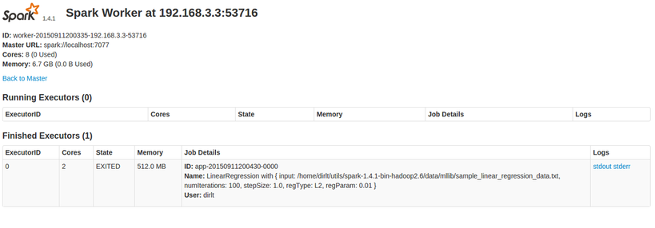
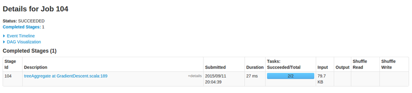
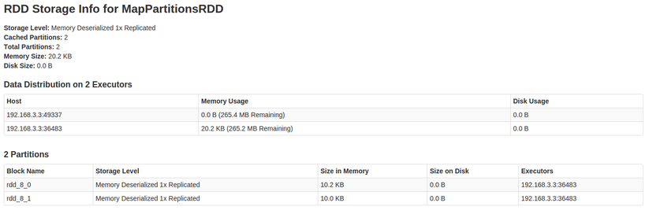
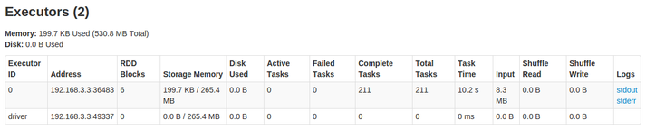

spark master ui
Table of Contents
1 Home
- 集群整体运行情况
- 集群内所有Worker
- 集群上正在运行以及运行完成的应用
2 Worker
- 当前机器运行情况
- 本机上运行的以及运行过的Executor
- Executor运行状况

3 Application
- 应用程序运行情况
- 应用程序运行过哪些Executor
- Executor运行状况
4 Jobs
为什么一个应用程序会有多个Jobs呢? 如何定义一个Jobs? 这个在spark文档 Job Scheduling 有定义
> Spark has several facilities for scheduling resources between computations. First, recall that, as described in the cluster mode overview, each Spark application (instance of SparkContext) runs an independent set of executor processes. The cluster managers that Spark runs on provide facilities for scheduling across applications. Second, within each Spark application, multiple “jobs” (Spark actions) may be running concurrently if they were submitted by different threads. This is common if your application is serving requests over the network. Spark includes a fair scheduler to schedule resources within each SparkContext.
- 一个SparkContext对应一个Application.
- 而一个Job则对应一个Spark Action.
- 一个Job内部执行可能包含一个或多个Stage(在Wide Dependency处产生一个Stage).
- 一个Stage里面包含多个Tasks.
下图说明了Job和Stage差别
这个页面可以看到每个Job详细情况:
- Description 描述
- 提交时间
- 运行时间
- 各个Stage的状态和时间
从Description进入可以看到这个Job详细情况

5 Stages
- Description 描述
- 提交和运行时间
- 输入和输出数据量
- shuffle数据量(从上一个stage读入多少数据, 往下一个stage写出多少数据)
和Job页面非常类似, 从Description进入可以看到详细信息. 但是Stage信息远比Job的多.
6 Storage
- RDD名称
- Storage Level(存储级别)
- RDD大小以及缓存情况

从RDD Name可以查看这个RDD更多细节

7 Environment
运行环境配置
8 Executors
这个应用程序的Executor运行情况. 这个比从Application进入查看Executor给出的信息要更多
